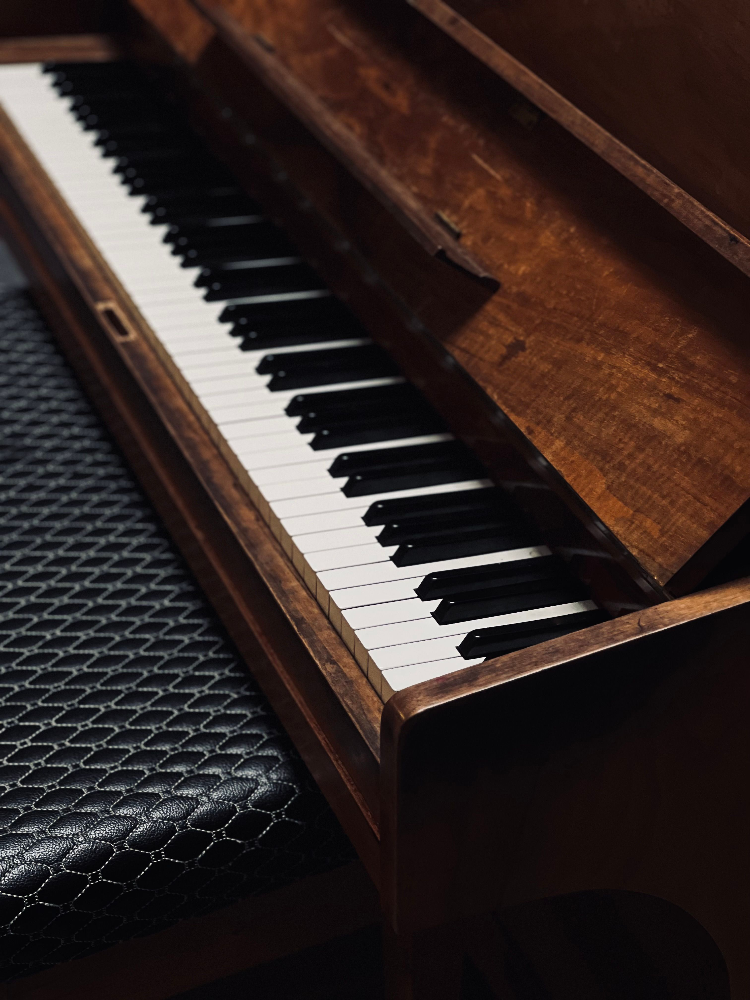
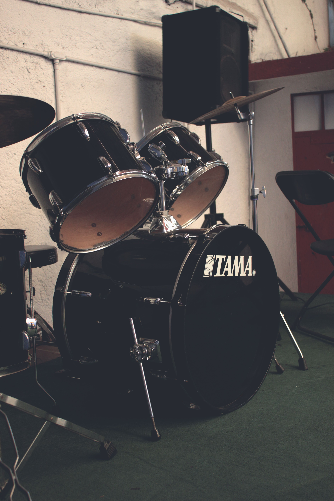
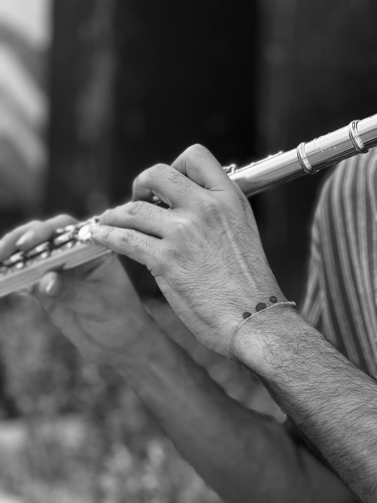

Cordas
Instrumentos que produzem sons por meio da vibração de suas cordas.
Conhecer instrumentos →Cada família musical possui características e sonoridades únicas.
Instrumentos que produzem sons por meio da vibração de suas cordas.
Conhecer instrumentos →Instrumentos que utilizam o ar para produzir diferentes sons e melodias.
Conhecer instrumentos →Instrumentos que criam ritmos por meio de batidas, impactos ou agitação.
Conhecer instrumentos →Instrumentos que permitem produzir melodias e harmonias usando teclas.
Conhecer instrumentos →Conheça alguns instrumentos populares e descubra como cada um funciona.
Um instrumento versátil, presente no pop, no rock, no samba e na MPB.
Aprender sobre o violão →Muito utilizada no rock, no blues e em diversos estilos musicais.
Aprender sobre a guitarra →
Um instrumento conhecido por sua ampla extensão de notas e sonoridade.
Aprender sobre o piano →
Responsável por marcar o ritmo e dar energia a muitas músicas.
Aprender sobre a bateria →Pequeno, leve e uma ótima opção para quem quer começar a tocar.
Aprender sobre o ukulele →
Instrumento de sopro com sonoridade suave, muito utilizado em diferentes estilos musicais.
Aprender sobre a flauta →Não precisa ser um especialista para começar. Aprenda no seu ritmo!
Descubra as sete notas musicais e entenda como elas são utilizadas para criar melodias.
Começar a aprender →Conheça as cordas, aprenda acordes básicos e descubra como começar a praticar.
Ver guia para iniciantes →Aprenda a organizar seus estudos e desenvolver sua habilidade musical.
Ver dicas →O Mundo dos Instrumentos nasceu para aproximar as pessoas da música. Nosso objetivo é apresentar instrumentos, compartilhar conhecimento e ajudar iniciantes a descobrir novas possibilidades.